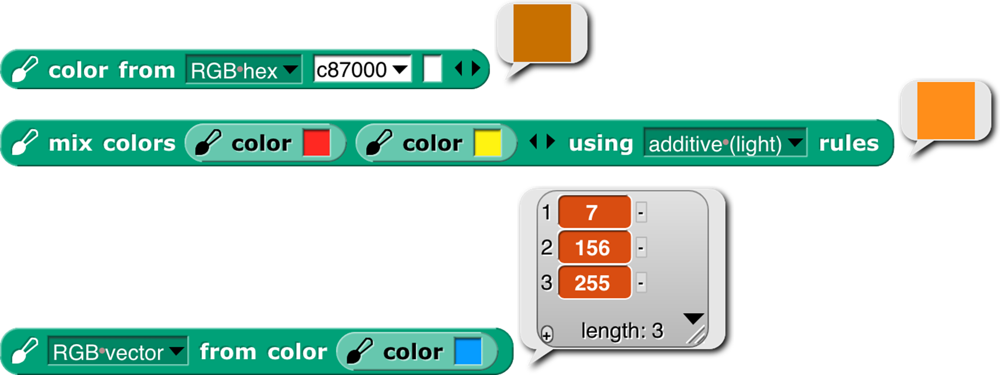
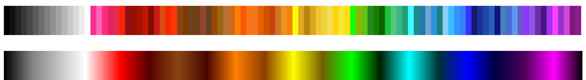
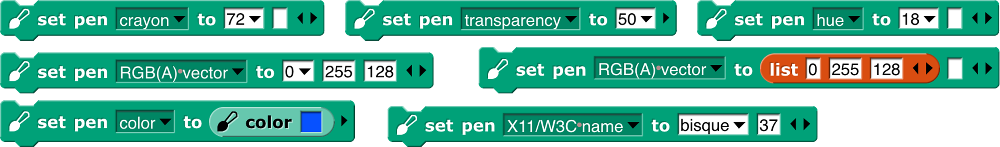
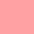
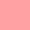
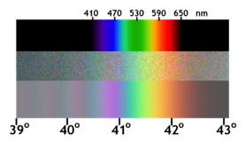
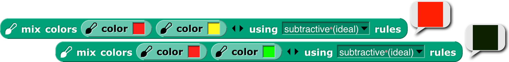
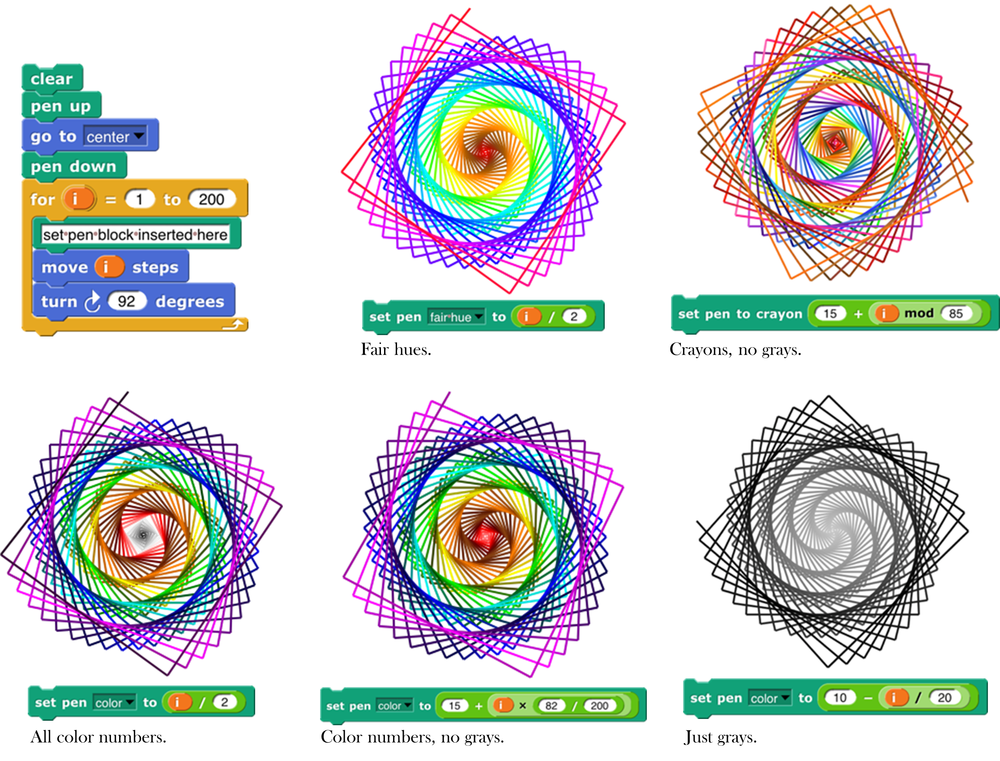
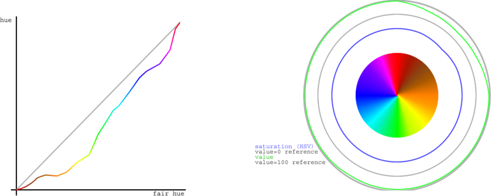

Appendix A — Appendix A. Snap! color library
The Colors and Crayons library provides several tools for manipulating color. Although its main purpose is controlling a sprite’s pen color, it also establishes colors as a first class data type:

For people who just want colors in their projects without having to be color experts, we provide two simple mechanisms: a color number scale with a broad range of continuous color variation and a set of 100 crayons organized by color family (ten reds, ten oranges, etc.) The crayons include the block colors:

For experts, we provide color selection by RGB, HSL, HSV, X11/W3C names, and variants on those scales.

Introduction to Color
Your computer monitor can display millions of colors, but you probably can’t distinguish that many. For example, here’s red 57, green 180, blue 200:  And here’s red 57, green 182, blue 200: You might be able to tell them apart if you see them side by side: but maybe not even then.
And here’s red 57, green 182, blue 200: You might be able to tell them apart if you see them side by side: but maybe not even then.
Color space —the collection of all possible colors—is three-dimensional, but there are many ways to choose the dimensions. RGB (red-green-blue), the one most commonly used in computers, matches the way TVs and displays produce color. Behind every dot on the screen are three tiny lights: a red one, a green one, and a blue one. But if you want to print colors on paper, your printer probably uses a different set of three colors: CMY (cyan-magenta-yellow). You may have seen the abbreviation CMYK , which represents the common technique of adding black ink to the collection. (Mixing cyan, magenta, and yellow in equal amounts is supposed to result in black ink, but typically it comes out a muddy brown instead, because chemistry.) Other systems that try to mimic human perception are HSL (hue-saturation-lightness) and HSV (hue-saturation-value). There are many, many more, each designed for a particular purpose.
If you are a color professional—a printer, a web designer, a graphic designer, an artist—then you need to understand all this. It can also be interesting to learn about. For example, there are colors that you can see but your computer display can’t generate. If that intrigues you, look up color theory in Wikipedia.
Crayons and Color Numbers
But if you just want some colors in your project, we provide a simple, one-dimensional subset of the available colors. Two subsets, actually: crayons and color numbers. Here’s the difference:

The first row shows 100 distinct colors. They have names; this is pumpkin  , and this is denim
, and this is denim  . You’re supposed to think of them as a big box of 100 crayons . They’re arranged in families: grays, pinks, reds, browns, oranges, etc. But they’re not consistently ordered within a family; you’d be unlikely to say “next crayon” in a project. (But look at the crayon spiral on page 145.) Instead, you’d think “I want this to look like a really old-fashioned photo” and so you’d find sepia
. You’re supposed to think of them as a big box of 100 crayons . They’re arranged in families: grays, pinks, reds, browns, oranges, etc. But they’re not consistently ordered within a family; you’d be unlikely to say “next crayon” in a project. (But look at the crayon spiral on page 145.) Instead, you’d think “I want this to look like a really old-fashioned photo” and so you’d find sepia  as crayon number 33. You don’t have to memorize the numbers! You can find them in a menu with a submenu for each family.
as crayon number 33. You don’t have to memorize the numbers! You can find them in a menu with a submenu for each family.

Or, if you know the crayon name, just  .
.
The crayon numbers are chosen so that skipping by 10 gives a sensible box of ten crayons :

Alternatively, skipping by 5 gives a still-sensible set of twenty crayons :

The set of color numbers is arranged so that each color number is visually near each of its neighbors. Bright and dark colors alternate for each family. Color numbers range from 0 to 99, like crayon numbers, but you can use fractional numbers to get as tiny a step as you like:

(“As tiny as you like” isn’t quite true because in the end, your color has to be rounded to integer RGB values for display.)
Both of these scales include the range of shades of gray , from black to white. Since black is the initial pen color, and black isn’t a hue, Scratch and Snap! users would traditionally try to use set color to escape from black, and it wouldn’t work. By including black in the same scale as other colors, we eliminate the Black Hole problem if people use only the recommended color scales.
We are making a point of saying “color number” for what was sometimes called just “color” in earlier versions of the library, because we now reserve the name “color” for an actual color, an instance of the color data type.
How to Use the Library
There are three library blocks specifically about controlling the pen. They have the same names as three of the primitive Pen blocks:
The first (Pen block-colored) input slot is used to select which color scale you want to use. (These blocks also allow reading or setting two block properties that are not colors: the pen size and its transparency.) The pen reporter requires no other inputs; it reports the state of the pen in whatever dimension you choose.

As the last example shows, you can’t ask for the pen color in a scale incompatible with how you set it, unless the block can deduce what you want from what it knows about the current pen color.
The change pen block applies only to numeric scales (including vectors of three or four numbers). It adds its numeric or list input to the current pen value(s), doing vector (item-by-item) addition for vector scales.
The set pen block changes the pen color to the value(s) you specify. The meaning of the white input slots depends on which attribute of the pen you’re setting:

In the last example, the number 37 sets the transparency, on the scale 0=opaque, 100=invisible. (All color attributes are on a 0–100 scale except for RGB components, which are 0–255.) A transparency value can be combined with any of these attribute scales.
The library also includes two constructors and a selector for colors as a data type:
The latter two are inverses of each other, translating between colors and their attributes. The color from block’s attribute menu has fewer choices than the similar set pen block because you can, for example, set the Red value of the existing pen color leaving the rest unchanged, but when creating a color out of nothing you have to provide its entire specification, e.g., all of Red, Green, and Blue, or the equivalent in other scales. (As you’ll see on the next page, we provide two linear (one-dimensional) color scales that allow you to specify a color with a single number, at the cost of including only a small subset of the millions of colors your computer can generate.) If you have a color and want another color that’s the same except for one number, as in the Red example, you can use this block:

Finally, the library includes the mix block and a helper:

We’ll have more to say about these after a detour through color theory.
That’s all you have to know about colors! Crayons for specific interesting ones, color numbers for gradual transformation from one color to the next. But there’s a bit more to say, if you’re interested. If not, stop here. (But look at the samples of the different scales on page 145.)
More about Colors: Fair Hues and Shades
Several of the three-dimensional arrangements of colors use the concept of “hue ,” which more or less means where a color would appear in a rainbow (magenta , near the right, is a long story):

These are called “spectral ” colors, after the spectrum of rainbow colors. But these colors aren’t equally distributed. There’s an awful lot of green, hardly any yellow, and just a sliver of orange. And no brown at all.
And this is already a handwave, because the range of colors that can be generated by RGB monitors doesn’t include some of the true spectral colors. See Spectral color in Wikipedia for all the gory details.
This isn’t a problem with the physics of rainbows. It’s in the human eye and the human brain that certain ranges of wavelength of light waves are lumped together as named colors. The eye is just “tuned” to recognize a wide range of colors as green. (See Rods and Cones.) And different human cultures give names to different color ranges. Nevertheless, in old Scratch projects, you’d say change pen color by 1 and it’d take forever to reach a color that wasn’t green.
For color professionals, there are good reasons to want to work with the physical rainbow hue layout. But for amateurs using a simplified, one-dimensional color model, there’s no reason not to use a more programmer-friendly hue scale:


In this scale, each of the seven rainbow colors and brown get an equal share. (Red’s looks too small, but that’s because it’s split between the two ends: hue 0 is pure red, brownish reds are to its right, and purplish reds are wrapped around to the right end.) We call this scale “fair hue ” because each color family gets a fair share of the total hue range. (By the way, you were probably taught “… green, blue, indigo , violet” in school, but it turns out that color names were different in Isaac Newton’s day, and the color he called “blue” is more like modern cyan, while his “indigo” is more like modern blue. See Wikipedia Indigo.)
Our color number scale is based on fair hues, adding a range of grays from black (color number 0 ) to white (color number 14) and also adding shades of the spectral colors. (In color terminology, a shade is a darker version of a color; a lighter version is called a tint.) Why do we add shades but not tints ? Partly because I find shades more exciting. A shade of red  can be dark candy apple red
can be dark candy apple red  or maroon
or maroon  , but a tint is just some kind of pink  . This admitted prejudice is supported by an objective fact: Most projects are made on a white background , so dark colors stand out better than light ones.
, but a tint is just some kind of pink  . This admitted prejudice is supported by an objective fact: Most projects are made on a white background , so dark colors stand out better than light ones.
So, in our color number scale, color numbers 0 to 14 are kinds of gray ; the remaining color numbers go through the fair hues, but alternating full-strength colors with shades.
crayons by 10
crayons by 5
crayons
fair hues
color numbers
color numbers by 5
color numbers by 10

This chart shows how the color scales discussed so far are related. Note that all scales range from 0 to 100; the fair hues scale has been compressed in the chart so that similar colors line up vertically. (Its dimensions are different because it doesn’t include the grays at the left. Since there are eight color families, the pure, named fair hues are at multiples of 100/8=12.5, starting with red=0.)
White is crayon 14 and color number 14. This value was deliberately chosen not to be a multiple of 5 so that the every-fifth-crayon and every-tenth-crayon selections don’t include it, so that all of the crayons in those smaller boxes are visible against a white stage background.

Among purples , the official spectral violet (crayon 90) is the end of the spectrum. Magenta , brighter than violet, isn’t a spectral color at all. (In the picture at the left, the top part is the spectrum of white light spread out through a prism; the middle part is a photograph of a rainbow, and the bottom part is a digital simulation of a rainbow.) Magenta is a mixture of red and blue. (attribution: Wikipedia user Andys. CC BY-SA.)
The light gray at color number 10 is slightly different from crayon 10 just because of roundoff in computing crayon values. Color number 90 is different from crayon 90 because the official RGB violet (equal parts red and blue) is actually lighter than spectral violet. The purple family is also unusual because magenta, crayon and color number 95, is lighter than the violet at 90. In other families, the color numbers, crayons, and (scaled) fair hues all agree at multiples of ten. These multiple-of-ten positions are the standard RGB primary and secondary colors, e.g., the yellow at color number 50 is (255, 255, 0) in RGB. (Gray, brown, and orange don’t have such simple RGB settings.)
The color numbers at odd multiples of five are generally darker shades than the corresponding crayons. The latter are often official named shades, e.g., teal , crayon 65, is a half-intensity shade of cyan . The odd-five color numbers, though, are often darker, since they are chosen to be the darkest color in a given family that’s visibly different from black. The pink at color number 15, though, is quite different from crayon 15, because the former is a pure tint of red, whereas the crayon, to get a more interesting pink, has a little magenta mixed in. Color numbers at multiples of five are looked up in a table; other color values are determined by linear interpolation in RGB space. (Crayons are of course all found by table lookup.)
The from color block behaves specially when you ask for the color number of a color. Most colors don’t exactly match a color number, and for other attributes of a color (crayon number, X11 name) you don’t get an answer unless the color exactly matches one of the names or numbers in that attribute. But for color number, the block tries to find the nearest color number to the color you specify. The result will be only approximate; you can’t use the number you get to recreate the input color. But you can start choosing nearby color numbers as you animate the sprite.
Perceptual Spaces: HSV and HSL

RGB is the right way to think about colors if you’re building or programming a display monitor; CMYK is the right way if you’re building or programming a color printer. But neither of those coordinate systems is very intuitive if you’re trying to understand what color you see if, for example, you mix 37% red light, 52% green, and 11% blue. The hue scale is one dimension of most attempts at a perceptual scale. The square at the right has pale blues along the top edge, dark blues along the right edge, various shades of gray toward the left, black at the bottom, and pure spectral blue in the top right corner. Although no other point in the square is pure blue, you can tell at a glance that no other spectral color is mixed with the blue.

Aside from hue, the other two dimensions of a color space have to represent how much white and/or black is mixed with the spectral color. (Bear in mind that “mixing black” is a metaphor when it comes to monitors. There really is black paint, but there’s no such thing as black light.) One such space, HSV , has one dimension for the amount of color (vs. white), called saturation, and one for the amount of black, imaginatively called value. HSV stands for Hue-Saturation -Value . (Value is also called brightness.) The value is actually measured backward from the above description; that is, if value is 0, the color is pure black; if value is 100, then a saturation of 0 means all white, no spectral color; a saturation of 100 means no white at all. In the square in the previous paragraph, the x axis is the saturation and the y axis is the value. The entire bottom edge is black, but only the top left corner is white. HSV is the traditional color space used in Scratch and Snap!. Set pen color set the hue; set pen shade set the value. There was originally no Pen block to set the saturation, but there’s a set brightness effect Looks block to control the saturation of the sprite’s costume. (I speculate that the Scratch designers, like me, thought tints were less vivid than shades against a white background, so they made it harder to control tinting.)
attribution: Wikipedia user SharkD, CC BY-SA 3.0
But if you’re looking at colors on a computer display, HSV isn’t really a good match for human perception. Intuitively, black and white should be treated symmetrically. This is the HSL (hue-saturation-lightness ) color space.

Saturation, in HSL, is a measure of the grayness or dullness of a color (how close it comes to being on a black-and-white scale) and lightness measures spectralness with pure white at one end, pure black at the other end, and spectral color in the middle. The saturation number is actually the opposite of grayness: 0 means pure gray, and 100 means pure spectral color, provided that the lightness is 50, midway between black and white. Colors with lightness other than 50 have some black or white mixed in, but saturation 100 means that the color is as fully saturated as it can be, given the amount of white or black needed to achieve that lightness. Saturation less than 100 means that both white and black are mixed with the spectral color. (Such mixtures are called tones of the spectral color.) Perceptually, colors with saturation 100% don’t look gray:  but colors with saturation 75% do:
but colors with saturation 75% do: 
Note that HSV and HSL both have a dimension called “saturation,” but they’re not the same thing! In HSV, “saturation” means non-whiteness, whereas in HSL it means non-grayness (vividness).
More fine print: It’s misleading to talk about the spectrum of light wavelengths as if it were the same as perceived hue. If your computer display is showing you a yellow area, for example, it’s doing it by turning on its red and green LEDs over that area, and what hits your retina is still two wavelengths of light, red and green, superimposed. You could make what’s perceptually the same yellow by using a single intermediate wavelength. Your eye and brain don’t distinguish between those two kinds of yellow. Also, your brain automatically adjusts perceived hue to correct for differences in illumination. When you place a monochrome object so that it’s half in sunlight and half in the shade, you see it as one even though what’s reaching your eyes from the two regions differs a lot. And, sadly, it’s HSL whose use of “saturation” disagrees with the official international color vocabulary standardization committee. I learned all this from this tutorial, which you might find more coherent than jumping around Wikipedia if you’re interested.

Although traditional Scratch and Snap! use HSV in programs, they use HSL in the color picker . The horizontal axis is hue (fair hue , in this version) and the vertical axis is lightness, the scale with black at one end and white at the other end. It would make no sense to have only the bottom half of this selector (HSV Value) or only the top half (HSV Saturation). And, given that you can only fit two dimensions on a flat screen, it makes sense to pick HSL saturation (vividness) as the one to keep at 100%. (In this fair-hue picker, some colors appear twice: “spectral” (50% lightness) browns as shades (≈33% lightness) of red or orange, and shades of those browns.)
Software that isn’t primarily about colors (so, not including Photoshop, for example) typically use HSV or HSL, with web-based software more likely to use HSV because that’s what’s built into the JavaScript programming language provided by browsers. But if the goal is to model human color perception, neither of these color spaces is satisfactory, because they assume that all full-intensity spectral colors are equally bright. But if you’re like most people, you see spectral yellow  as much brighter than spectral blue
as much brighter than spectral blue  . There are better perceptual color spaces with names like L*u*v* and L*a*b* that are based on research with human subjects to determine true perceived brightness. Wikipedia explains all this and more at HSL and HSV, where they recommend ditching both of these simplistic color spaces. ☺
. There are better perceptual color spaces with names like L*u*v* and L*a*b* that are based on research with human subjects to determine true perceived brightness. Wikipedia explains all this and more at HSL and HSV, where they recommend ditching both of these simplistic color spaces. ☺
Mixing Colors
Given first class colors, the next question is, what operations apply to them, the way arithmetic operators apply to numbers and higher order functions apply to lists? The equivalent to adding numbers is mixing colors, but unfortunately there isn’t a simple answer to what that means.
The easiest kind of color mixing to understand is additive mixing, which is what happens when you shine two colored lights onto a (white) wall. It’s also what happens in your computer screen, where each dot (pixel) of an image is created by a tiny red light, a tiny green light, and a tiny blue light that can be combined at different strengths to make different colors. Essentially, additive mixing of two colors is computed by adding the two red components, the two green components, and the two blue components. It’s not quite that simple only because each component of the result must be in the range 0 to 255. So, red (255, 0, 0) mixed with green (0, 255, 0) gives (255, 255, 0), which is yellow. But red (255, 0, 0) plus yellow (255, 255, 0) can’t give (510, 255, 0). Just limiting the red in the result to 255 would mean that red plus yellow is yellow, which doesn’t make sense. Instead, if the red value has to be reduced by half (from 510 to 255), then all three values must be reduced by half, so the result is (255, 128, 0), which is orange. (Half of 255 is 127.5, but each RGB value must be an integer.)

A different kind of color mixing based on light is done when different colored transparent plastic sheets are held in front of a white light, as is done in theatrical lighting. In that situation, the light that gets through both filters is what remains after some light is filtered out by the first one and some of what’s left is filtered out by the second one. In red-green-blue terms, a red filter filters out green and blue; a yellow filter allows red and green through, filtering out blue. But there isn’t any green light for the yellow filter to pass; it was filtered out by the red filter. Each filter can only remove light, not add light, so this is called subtractive mixing:

Perhaps confusingly, the numerical computation of subtractive mixing is done by multiplying the RGB values, taken as fractions of the maximum 255, so red (1, 0, 0) times yellow (1, 1, 0) is red again.
Those are both straightforward to compute. Much, much more complicated is trying to simulate the result of mixing paints . It’s not just that we’d have to compute a more complicated function of the red, green, and blue values; it’s that RGB values (or any other three-dimensional color space) are inadequate to describe the behavior of paints . Two paints can look identical, and have the same RGB values, but may still behave very differently when mixed with other colors. The differences are mostly due to the chemistry of the paints, but are also affected by exactly how the colors are mixed. The mixing is mostly subtractive; red paint absorbs most of the colors other than red, so what’s reflected off the surface is whatever isn’t absorbed by the colors being mixed. But there can be an additive component also.
The proper mathematical abstraction to describe a paint is a reflectance graph , like this:

(These aren’t paints, but minerals, and one software-generated spectrum, from the US Geological Survey’s Spectral Library. The details don’t matter, just the fact that a graph like these gives much more information than three RGB numbers.) To mix two paints properly, you multiply the y values (as fractions) at each matching x coordinate of the two graphs.
Having said all that, the mix block takes the colors it is given as inputs and converts them into what we hope are typical paint reflectance spectra that would look like those colors, and then mixes those spectra and converts back to RGB.

But unlike the other two kinds of mixing, in this case we can’t say that these colors are “the right answer”; what would happen with real paints depends on their chemical composition and how they’re mixed. There are three more mixing options, but these three are the ones that correspond to real-world color mixing.
The mix block will accept any number of colors, and will mix them in equal proportion. If (for any kind of mixing) you want more of one color than another, use the color at weight block to make a “weighted color”:

This mixes four parts red paint to one part green paint. All colors in a mixture can be weighted:

(Thanks to Scott Burns for his help in understanding paint mixing, along with David Briggs ’s tutorial. Remaining mistakes are bh’s.)
tl;dr
For normal people , Snap! provides three simple, one-dimensional scales: crayons for specific interesting colors, color numbers for a continuum of high-contrast colors with a range of hues and shading, and fair hues for a continuum without shading. For color nerds , it provides three-dimensional color spaces RGB, HSL, HSV, and fair-hue variants of the latter two. We recommend “fair HSL ” for zeroing in on a desired color.

Subappendix: Geeky details on fair hue

The left graph shows that, unsurprisingly, all of the brown fair hue s make essentially no progress in real hue, with the orange-brown section actually a little retrograde, since browns are really shades of orange and so the real hues overlap between fair browns and fair oranges. Green makes up some of the distance, because there are too many green real hues and part of the goal of the fair hue scale is to squeeze that part of the hue spectrum. But much of the catching up happens very quickly, between pure magenta at fair hue 93.75 and the start of the purple-red section at fair hue 97. This abrupt change is unfortunate, but the alternatives involve either stealing space from red or stealing space from purple (which already has to include both spectral violet and RGB magenta). The graph has discontinuous derivative at the table-lookup points, of which there are two in each color family, one at the pure-named-RGB colors at multiples of 12.5, and the other roughly halfway to the next color family, except for the purple family, which has lookup points at 87.5 (approximate spectral violet), 93.75 (RGB magenta), and 97 (turning point toward the red family). (In the color picker, blue captures cyan and purple space in dark shades. This, too, is an artifact of human vision.)
The right graph shows the HSV saturation and value for all the fair hues. Saturation is at 100%, as it should be in a hue scale, except for a very slight drop in part of the browns. (Browns are shades of orange, not tints, so one would expect full saturation, except that some of the browns are actually mixtures with related hues.) But value, also as expected, falls substantially in the browns, to a low of about 56% (halfway to black) for the “pure” brown at 45° (fair hue 12.5). But the curve is smooth, without inflection points other than that minimum-value pure brown.
“Fair saturation ” and “fair value ” are by definition 100% for the entire range of fair hues. This means that in the browns, the real saturation and value are the product (in percent) of the innate shading of the specific brown fair hue and the user’s fair saturation/value setting. When the user’s previous color setting was in a real scale and the new setting is in a fair scale, the program assumes that the previous saturation and value were entirely user-determined; when the previous color setting was in a brown fair hue and the new setting is also in a fair scale, the program remembers the user’s intention from the previous setting. (Internal calculations are based on HSV, even though we recommend HSL to users, because HSV comes to us directly from the JavaScript color management implementation.) This is why the set pen block includes options for “fair saturation” and so on.
For the extra-geeky, here are the exact table lookup points (fair hue , [0,100]):

and here are the RGB settings at those points:

Subappendix: Geeky details on color numbers

Here is a picture of integer color numbers, but remember that color numbers are continuous. (As usual, “continuous” values are ultimately converted to integer RGB values, so there’s really some granularity.) Color numbers 0-14 are continuously varying grayscale, from 0=black to 14=white. Color numbers 14+ε to 20 are linearly varying shades of pink, with RGB Red at color number 20.
Beyond that point, in each color family, the multiple of ten color number in the middle is the RGB standard color of that family, in which each component is either 255 or 0. (Exceptions are brown, which is of course darker than any of those colors; orange, with its green component half-strength: [255, 127, 0]; and violet, discussed below.) The following multiple of five is the number of the darkest color in that family, although not necessarily the same hue as the multiple of ten color number. Color numbers between the multiple of ten and the following multiple of five are shades of colors entirely within the family. Color numbers in the four before the multiple of ten are mixtures of this family and the one before it. So, for example, in the green family, we have
55 Darkest yellow.
(55, 60) shades of yellow-green mixtures. As the color number increases, both the hue and the lightness (or value, depending on your religion) increase, so we get brighter and greener colors.
60 Canonical green, [0, 255, 0], whose W3C color name is “lime,” not “green.”
(60, 65) Shades of green. No cyan mixed in.
65 Darkest green.
(65,70) Shades of green-cyan mixtures.
In the color number chart , all the dark color numbers look a lot like black, but they’re quite different. Here are the darkest colors in each color number family.

Darkest yellow doesn’t look entirely yellow. You might see it as greenish or brownish. As it turns out, the darkest color that really looks yellow is hardly dark at all. This color was hand-tweaked to look neither green nor brown to me, but ymmv.
In some families, the center+5 crayon is an important named darker version of the center color: In the red family, [128, 0, 0] is “maroon.” In the cyan family, [0, 128, 128] is “teal.” An early version of the color number scale used these named shades as the center+5 color number also. But on this page we use the word “darkest” advisedly: You can’t find a darker shade of this family anywhere in the color number scale, but you can find lighter shades. Teal is color number 73.1, (\(70 + 5 \bullet \frac{255 - 128}{255 - 50}\)), because darkest cyan, color 75, is [0, 50, 50]. The color number for maroon is left as an exercise for the reader.
The purple family is different from the others, because it has to include both spectral violet and extraspectral RGB magenta. Violet is usually given as RGB [128, 0, 255], but that’s much brighter than the violet in an actual spectrum (see page 142). We use [80, 0, 90], a value hand-tweaked to look as much as possible like the violet in rainbow photos, as color number 90. (Crayon 90 is [128, 0, 255].) Magenta, [255, 0, 255], is color number 95. This means that the colors get brighter, not darker, between 90 and 95. The darkest violet is actually color number 87.5, so it’s bluer than standard violet, but still plainly a purple and not a blue. It’s [39,0,76]. It’s not hand-tweaked; it’s a linear interpolation between darkest blue, [0, 0, 64], and the violet at color number 90. I determined by experiment that color number 87.5 is the darkest one that’s still unambiguously purple. (According to Wikipedia, “violet” names only the spectral color, while “purple” is the name of the whole color family.)
Here are the reference points for color numbers that are multiples of five, except for item 4, which is used for color 14, not color 15:

The very pale three-input list blocks are for color numbers that are odd multiples of five, generally the “darkest” members of each color family. (The block colors were adjusted in Photoshop; don’t ask how to get blocks this color in Snap!.)